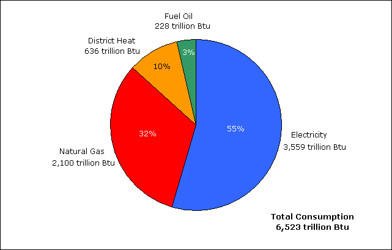
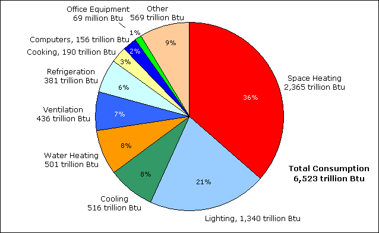

Introduction
The Energy Information Administration conducts the Commercial Buildings Energy Consumption Survey (CBECS) to collect information on energy-related building characteristics and types and amounts of energy consumed in commercial buildings in the United States.
In 2003, CBECS reports that commercial buildings:
- total nearly 4.9 million buildings
- comprise more than 71.6 billion square feet of floorspace
- consumed more than 6,500 trillion Btu of energy, with electricity accounting for 55 percent and natural gas 32 percent (Figure 1)
- consumed 36 percent of energy for space heating and 21 percent for lighting (Figure 2)
The CBECS is a national-level sample survey conducted quadrennially of buildings greater than 1,000 square feet in size that devote more than 50 percent of their floorspace to commercial activity. The 2003 CBECS, the eighth in the series begun in 1979, is significant because it was conducted using a completely new sample frame, the list of buildings from which the buildings to be surveyed were selected. See Sample Design and Technical Information on CBECS for additional information about the 2003 survey.
Figure 1. Electricity accounts for more than half of energy consumed by commercial buildings.
Source: Energy Information Administration, 2003 Commercial Buildings Energy Consumption Survey, Table C1A.
Figure 2. More than half of energy consumed in commercial buildings is used for space heating and lighting.
{kind=link}
Source: Energy Information Administration, 2003 Commercial Buildings Energy Consumption Survey, Table E1A.
Overview of Commercial Buildings, 2003
Introduction
Trends in Commercial Buildings Sector—1979 to 2003
Major Characteristics of All Commercial Buildings in 2003
2003 CBECS Detailed Tables
Building Characteristics Tables
Consumption and Expenditures Tables
End-Use Consumption Tables
Return to: CBECS Home Page
Specific questions may be directed to:
Alan Swenson
Alan Swenson
Date released: December, 2008